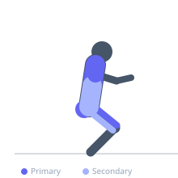
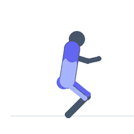

Exercise guide / Power Snatch
Power Snatch
The power snatch is a variation of the Olympic snatch in which the bar is received above parallel — the athlete catches the bar in a partial squat rather than a full overhead squat. The higher catch position requires greater bar height and more explosive power than the full snatch, making it an effective power development tool and a useful teaching progression. It is widely used in sport conditioning, CrossFit, and as an Olympic lifting warm-up.
Primary muscles
gluteus maximus
vastus lateralis
trapezius upper
deltoid anterior
Secondary muscles
erector spinae
biceps femoris long head
latissimus dorsi
Stabilizers
infraspinatus
supraspinatus
transverse abdominis
Equipment
Standard Barbell
Weight Plates


Starting position
- Same as the full snatch — bar over mid-foot, wide snatch grip, flat back, hips between shoulders and knees.
Setup
- Use bumper plates. The power snatch requires the same setup and pulling mechanics as the full snatch — the distinction is in the catch height.
Steps
- Step 1: Set the starting position with a wide snatch grip.
- Step 2: First pull — push the floor away and keep the bar close to the body.
- Step 3: Second pull — extend the hips explosively as the bar passes the hip crease, using maximum power.
- Step 4: Shrug and pull the elbows high and outside to generate maximal bar elevation.
- Step 5: Catch the bar overhead with elbows locked in a squat above parallel (thighs above horizontal), then stand fully.
Coaching cues
- Pull the bar as high as possible before turning over
- Catch above parallel — not in a full squat
- Punch the hands up and lock the elbows fast
Breathing
- Brace before initiating. Hold through the pull. Exhale after securing the overhead catch.
Range of motion
- Catch must occur above parallel. The overhead catch must have locked elbows and stable shoulder position.
Tempo
- Explosive. Maximum bar speed is the objective. No tempo prescription.
Common mistakes
- Catching too deep (this becomes a full snatch — above parallel is the power snatch standard)
- Relaxing the bar path and letting it drift forward
- Early arm bend
Safety
- Use bumper plates and be prepared to bail the bar safely forward.
- Master bar mechanics with lighter loads before increasing weight.
Training
- power: 1–3 reps
- strength: 1–5 reps
- power: 4–8 sets
- strength: 3–6 sets
- Rest: {'power': 180, 'strength': 240}